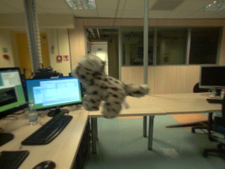
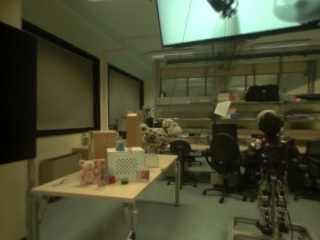
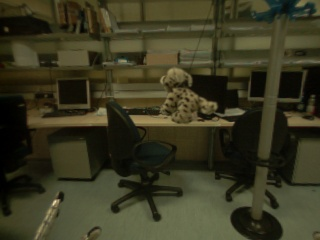
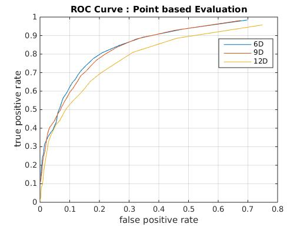
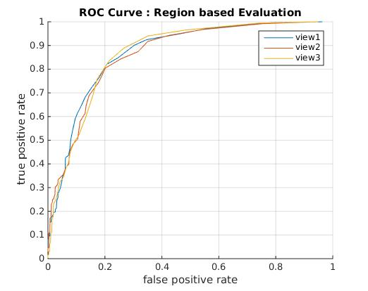

| Ground Truth results page | Click on this link to view in Frames |
| View 1 |  |
| View 2 |  |
| View 3 |  |
| view 1 | Click on this link to view in Frames and observation |
| view 2 | Click on this link to view in Frames and observation |
| view 3 | Click on this link to view in Frames and observation |

| view 1 | Click on this link to view in Frames and observation |
| view 2 | Click on this link to view in Frames and observation |
| view 3 | Click on this link to view in Frames and observation |
|  |  |